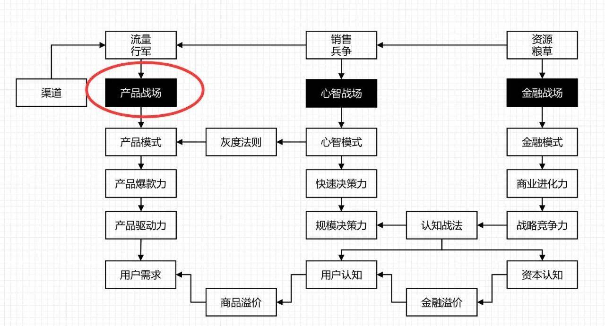
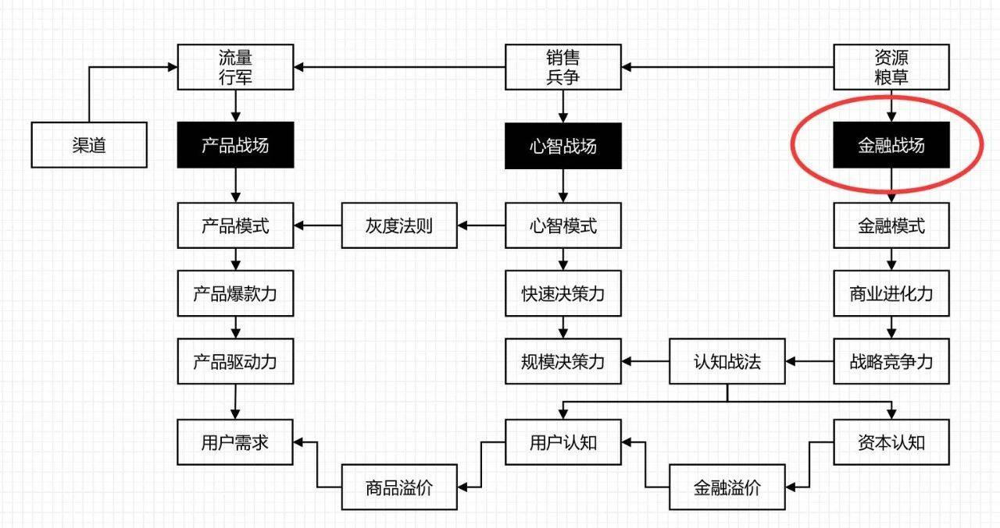
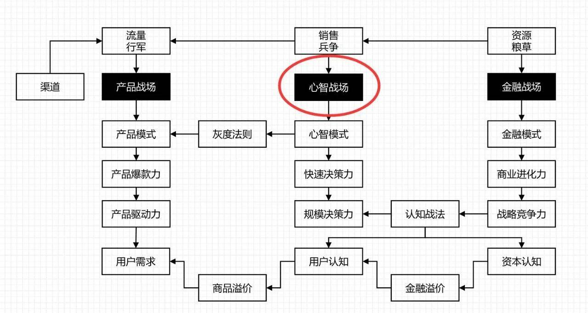
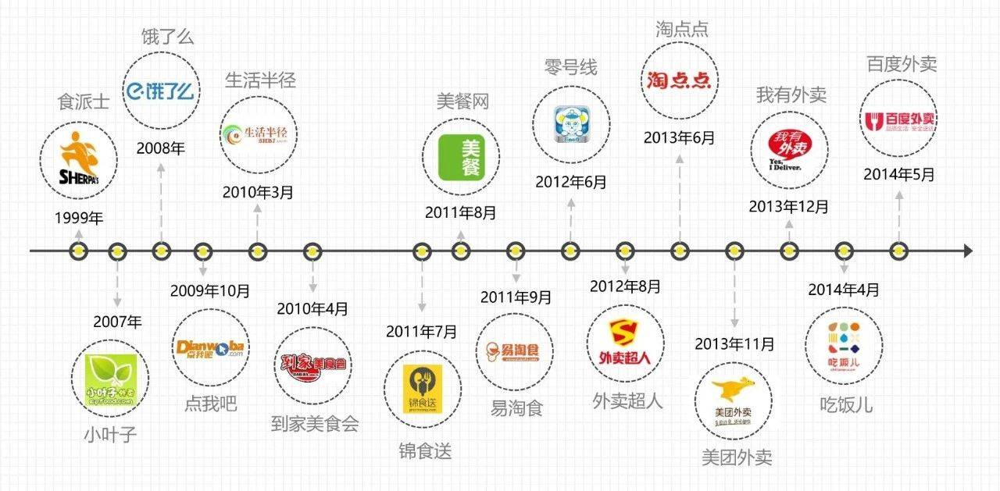
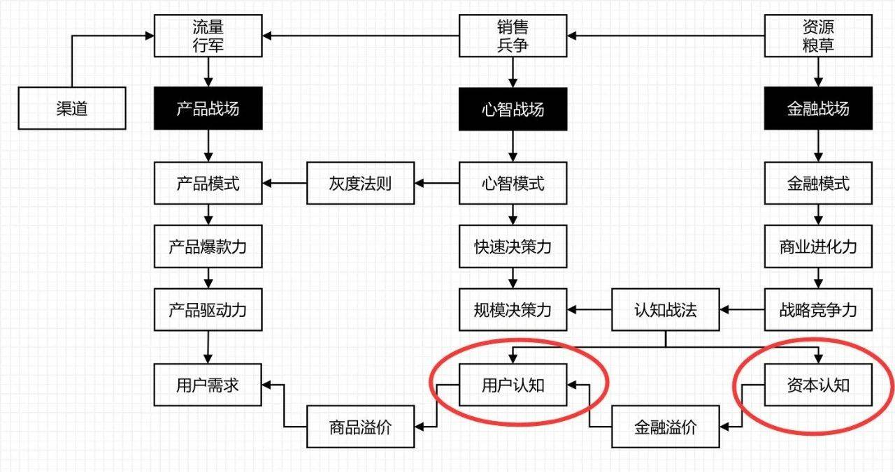
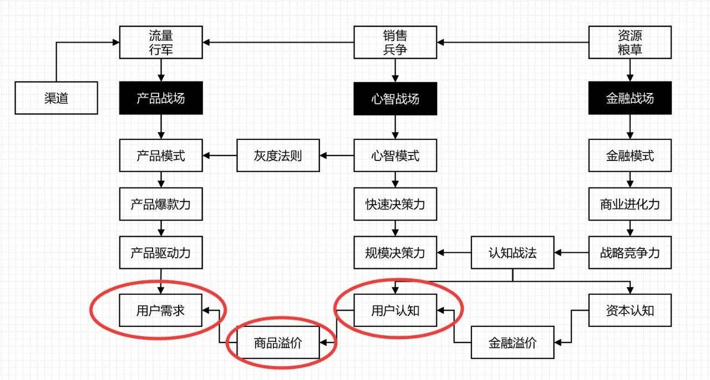
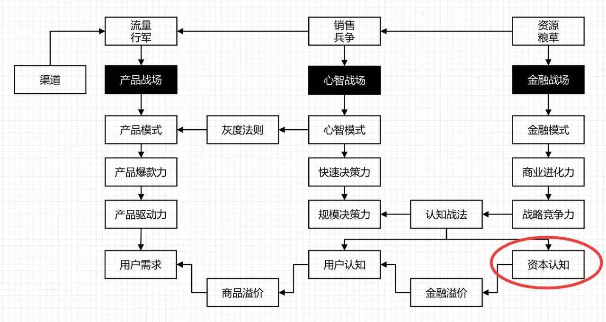
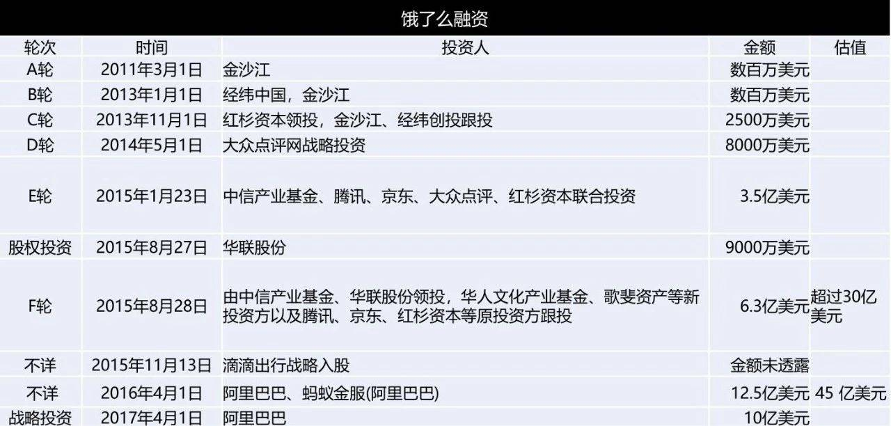
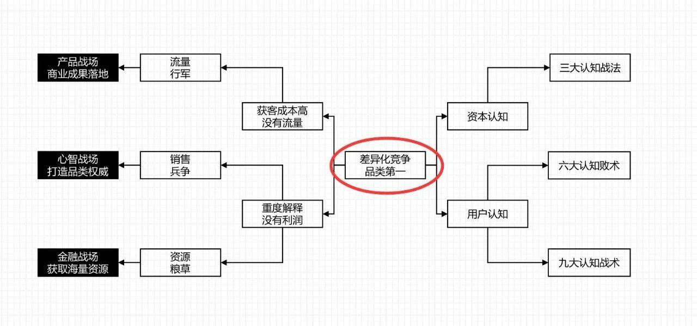

谁值得我学习？（谁是对标？）
谁在抢我的饭碗？（谁是对手？）
谁可以在一起合作？（谁是对友？不只是队友）
内容来源：2018年3月25日，北京大学营销升级总裁研修班课上，灰度认知社创始人曹升先生主讲《认知战法》。笔记侠作为课程笔记合作方，经主办方和讲者授权发布。
今天分享的主题是“认知战法”，非常高兴能有这个机会跟大家做一个交流。
一、人是怎么做决策的？
为什么卡尼曼这样的心理学家会获得诺贝尔经济学奖？
原因是心理学家告诉我们，人的决策是非理性的，做决策时人的第一反应是人性，第二反应是认知。
1. 人性层面
人是凭着人性做决策的，能触动人性、激发人性、顺应人性的相关产品，消费者容易决策，容易火爆。比如靠对美的追求、品牌感强而火爆的化妆品；符合人性的三俗广告；陌生人社交软件等。
有一个非常奇怪的心理现象，越是重大的决策，往往越是靠直觉。
2. 认知层面
为什么有些公司获客成本高？一言以避之，那就是“功能营销”。
功能营销的弊病就是，一上来就硬介绍产品功能，把客户带到功能认知上去，决策成交率会越来越低。
为什么呢？因为，做认知决策时，人会考虑利弊，会考虑多种可能性与替代品，在多种事物中进行关联、比较、选择，最终决策。所以决策周期越来越长，决策力度越来越低。
要想压缩认知决策周期，就要在产品设计和营销环节，更多的要让用户产生一个“认知”，但是决策的时候，要把用户往“人性”方向去推，决策会更快，更能实现规模化销售。
换成大白话说，理性诉求，感性表达，才是高效率的营销。比如，你卖的是房子，而客户买的是家，以及家的“认知”与“人性”的幸福感。
3. 简而言之
人性决策 = 情绪触发 + 情感触发 + 功利触发
认知决策 = 认知关联 + 认知比较 + 最优化选择
与认知决策周期相比，更要命的是，功能营销没有办法抓住客户的注意力。缺少用户触点，就无法产生自然流量。
自然流量是指你没有做广告，就有客户自己找上门来而形成的流量。是否有自然流量，是区分营销效果的重要标志。
二、外卖大战的商业认知
外卖行业用互联网工具来提升商业价值，但是商业逻辑的底层还是传统产业。它似乎没有那么多技术含量，然而在我们不认为外卖是个大产业的时候，饿了么做到了九十多亿美元的企业估值。
看过一个市场数据，美团外卖大概占市场份额60%多一点，饿了么占30%多一点，两强之后再剩下的那些品牌总和也不过就几个点了。
为什么整个中国只有美团和饿了么两家占这么大的份额，其他人就做不起来呢？
1. 饿了么是怎么起来的？
饿了么团队创业时都还是大学生。他们为什么会进入外卖行业？
几个年轻的大学生要生存，就想做一件事能赚钱。大学生没有资源，什么都干不了。到了中午饿了，好像吃饭是痛点，是刚需，思路就跳到这里来了：我们在这里创业行不行啊？一下子脑洞大开。
饿了么的商标是大有讲究，它和红牛、脑白金都有一个很狡猾的地方——场景驱动。
最早用这一套路的是著名饮料品牌红牛，“困了累了喝红牛”。红牛=极限，它主打极限运动精神，但是广告词打的却是场景驱动，“困了累了”是一种用户场景。
脑白金也一样狡猾，“送礼就送脑白金”，你都不知道产品有什么功能？送的是什么东西？它打的也是用户场景。
“小饿小困就喝香飘飘”，打的也是场景。
饿了么，硬生生地把一个场景，变成了它的商标，把两个不相关的事物关联起来了。于是，经过一段时间的沉淀，在用户心智中，饿了么=外卖。
2. 谁是饿了么第一个对标？
SHERPA’S，中文名“食派士”。这个名字很不容易记住。在中国做生意，用户对中文品牌无感那就真的输在起跑线上了。
① 食派士起家的原因
食派士是一个叫马克的美国人做的，他是中欧国际工商学院的MBA学生。他在中国吃饭比较痛苦，有三个原因：
第一，不熟悉中餐菜名典故。餐馆服务生往往不会说英语。他是老外懂一点点中文，但是一看菜单就心惊肉跳，什么叫“蚂蚁上树”，什么叫“狮子头”，什么叫“鱼香肉丝”，没有蚂蚁，也没有鱼啊，这不是骗我吗？
第二，他作为一个外国人，在餐馆吃饭会有人围观。用户体验非常不好，他不喜欢这种感觉。
第三，西餐厅数量稀少。他作为一个外国人更喜欢的是西式餐厅，或者就是酒吧这样的地方做的一些西餐。
但是问题来了，如果是中餐，方圆百米内很可能有好几家店，但是如果想买到西餐，可能1公里外都没有这样的店，到3公里外才会有2家店。
他的创业基于什么？也是场景（外国人就餐体验差，这是痛点）。
他对外国人就餐的痛点有了一个差异化认知，因为有这三个痛点，所以做这个生意的商业逻辑是通的。
他做的生意也是高度差异化的，主要在上海、苏州、北京3个城市展开业务。1998年开始做，1999年正式运营，应该是在中国有品牌的外卖鼻祖。
② 食派士的比较优势是什么？
它是外国人认可的、高端的中国外卖第一品牌，尽管是小众，也是一个用户心智接受的品类第一。
差异化就意味着避免了跟行业老大正面交锋，有效地避开了价格战。品类受消费者认可，可以有自然流量，可以提价，还避开了红海一样的恶性竞争。
食派士在三个城市开了3个平台，服务了约600家的企业，客单价在300元左右。
它是中国客单价最高的外卖平台之一了，有自身的比较优势，但缺点也同样明显，就是本地化运营、互联网化运营相当地不充分，没能抓住外卖大风口，顺势做大做强。2017年食派士被百盛中国收购。
③ 饿了么向食派士学什么？
食派士最土的地方在于，竟然到处发小册子。在广场上看见一个老外就送他一份宣传单，上面有中文和英文的说明。食派士常年坚持发小册子，做得不错，因为客单价高，即使不做互联网运营也能活得很滋润。
饿了么学习它印小册子做推广，但是创始团队都是学生，没有钱，怎么印1万份？
他们就想了个办法，找到一家别克4S店，联合印制广告，免费帮人派发，这样就把小册子的成本覆盖了。
这里要说一个非常重要的概念。
商业认知有三大战场：产品战场、心智战场、金融战场。
饿了么印宣传单的举动就是在金融战场打的，拿自己不存在的比较优势找别克4S店融了一笔宣传费。非常高明，饿了么主要卖产品赚钱，没想到在没有卖产品的时候也能赚一笔钱。
“原来我们公司除了卖产品卖服务，其他也有地方是可以卖钱的”，这就是金融。
是不是脑洞大开？
很多人都误以为，金融就是以钱为产品的买与卖，我是做产业的，跟我关系不大。这是狭义的金融，是对金融的重大误解。
我提一个概念，建议大家记下来，我们所理解的金融，是指跨时空的价值交换。
如果你不懂这个，你就完全不懂金融。完全不知道还有大量的资源被你浪费掉了。
3. 谁是饿了么第一个对手？
第一个竞争对手叫小叶子当家。
① 认知优势
2007年小叶子当家就覆盖了上海大部分的外卖，它对标是美国的一家公司，翻译过来叫校园美食。
小叶子当家找对标很准，校园美食已经有完整的运营方案了。饿了么学一个食派士，还只学了一点点，没有完整的模仿方案。
非常可悲的是，这就是饿了么的学习能力与认知优势了：
饿了么学习了一个高端品牌，但它的外卖商家产品价格以20元左右居多；
小叶子当家学的是美国的校园美食，但它的外卖商家产品价格有相当一部分竟然在50元左右，客单价20元左右的占比没有形成绝对份额。
两家所学习的对标与实际的行为，完全错位了。
上海物价再高，你主打的第一对象是学生，价格就要符合他们的消费水平，所有的东西都要围绕这个焦点来配套。
假设我是一个大学生，我自己日常吃外卖18元，如果我请女朋友吃外卖，会吃50元的么？50元的利和弊是什么呢？这个价格为什么不请她去饭店吃呢？
你看，用户就进入认知决策的领地了。
这里的一个启示：创业起步的时候，一定要单点突破。产品与服务的对象越窄越好，主打核心人群的核心利益与核心需求，把他们打穿打透，不要怕以后其他非核心人群不会来。
② 价格战
同质化竞争，结局必然是价格战。
小叶子当家和饿了么开始捉对厮杀了，第一个上来的手段糟糕了，小叶子当家作为细分市场先行者，出了狠手，大量补贴，送冰红茶，送荷包蛋。
饿了么这帮家伙只有5万左右的资金，怎么跟人家小叶子注册资本100万去拼呢？
进入了别人的势力范围，别人拿补贴打你，打价格战了怎么活？
③ 执行优势
要想从残酷的价格战中生存下来，就必须要选择一个战场，通过高效运营、高效执行进行反击：产品战场、心智战场、金融战场，从哪个下手？
A.产品战场
只有同质化才会打价格战，送餐体验上饿了么并不占优势。
在产品端能不能跟小叶子当家 PK 一把？

那个时候技术上比较落后，大部分的订餐是靠打电话、短信联系，电话经常占线，记错内容。这是痛点刚需。饿了么在PC端做了一套商家系统，小叶子当家也做了，但是饿了么的产品更人性化。
B.金融战场
前面我们专门强调了，不要认为只有互联网的企业或者从业人员才具有互联网思维，那也是错的，互联网也是金融。
因为，互联网最善于做跨时空的价值交换，一边免费把流量拉过来，免费必然亏损，但是不怕，另一边可以把流量变现，就能赚钱。
流量导入、关系沉淀、价值变现，已然是互联网的标准作业流程了。

这里有很多细节，饿了么明显比小叶子当家懂互联网思维，更懂金融。
除了产品本身，饿了么还能创造哪些本来并不存在的价值？这些价值与谁可以交易、互换，甚至可以直接变现？
第一，缩短交易流程，提升商家效率。
小叶子当家流程：有订单了，需要确认、接收，再按一个打印。
饿了么流程：有订单了，一键打印。
不要小看这种微不足道的微小进步。
一是这种进步是以客户为中心的，以效率提升为驱动的，说着容易做起来就难了。有不少企业把客户思维放在口头上，无法在产品上直接落地；
二是因为无论2C，还是2B，在互联网上，每多经过一个页面，流失率比想象的多得多，经过5个页面，几乎就没有客户转化率了。
第二，提供数据分析给重点商家。
张旭豪这个大学生团队学习能力真得很强，他们做了一些辅助性工作，把几十个重点商家上个月的经营情况做了分析（在什么时间点订的餐比较多，什么菜是热门菜？）给到商家，帮助他们改善经营，提升效率。
他们拿数据分析做了交换：
本来饿了么提成是8%，现在我希望你根据上个月的量预付下个月的8%。我给你免费做这个分析，不多收一分钱，那个8%也是多退少补的。万一卖得少就退给你，卖得多后面再补给我。
饿了么又凭空多融了一笔运营费用，而且提前一个月拿到了。这就是金融。
第三，开发人性决策，学习跨界对标。
还有一个很牛的，研究另外一个跨界对标——在网上卖软件的SaaS。
注：SaaS：软件即服务（英文：Software as a Service），21世纪初期兴起的一种新的软件应用模式。
根据国外卖SaaS的经验，发现一个特点：
收取8%费用的时候，客户会进入认知决策，心里会关联、比较：
平台帮我卖的量不够的时候，我付你8%对我没有意义，你帮我赚了92%意义不大，但是量很多的时候觉得又心疼，这怎么办？
SaaS的解决办法是收取年费，饿了么也学习了这一点，按销量收取4800元的年费。这是不是又凭空多融了一笔运营费用，而且提前一年拿到了。这也是金融。
C.心智战场
用户一旦形成了“认知”，就要想办法往“人性”层面去推动。收取年费这种价格体系一旦商家接受之后，就会在商家心智里发酵，形成连锁反应。

第一，商家会从认知决策中，计算出来省钱了；
第二，这笔钱已经花完了，如果再找其他的渠道，再给别人8%就不划算了。
为了节省成本，他们甚至把其他的渠道客户也往这个渠道拉。
第三，捡便宜是人的天性。一次性付完4800元以后，商家的客户量交易量在增长，却不必再付额外费用，商家觉得自己捡便宜了。
这里注意很重要的一点，千万不要随便降价促销。因为降价促销会对品牌造成巨大伤害，使客户产生“每年在正常时间买货，不如等到在降价时间点买货”的期待。这样客户对你的品牌认知会越来越差。
对于客户来说，便宜不重要，捡便宜比便宜本身更重要。你要给客户一种在某种情况之下可以捡便宜的机会，可以名正言顺的推销和降价，于是客户量就自然增长了。
饿了么在心智战场做了很多事情，比如他们在2008年的7月17号就注册了一个很容易记的域名，www.ele.me。显然，这都是面向大学生心智而精心设计的。
他们通过编写代码在交大BBS里发站内信进行推广，发完之后一下就爆了，产生了大量的自然流量。这也是顺应大学生心智的推广行为。
在这样情况之下，大概打了九个多月，小叶子当家就从上海交大闵行校区这个外卖市场退出了，都没有顽强抵抗。
因为认知失误，多少年后，小叶子当家创始人与某一投资人闲聊时，说我们完美的错过外卖风口，当时就完全没想过外卖会是一个大风口。
显然，在商业三大认知战场（产品战场、心智战场、金融战场），饿了么建立了自身的比较优势，相对竞争对手，学习能力更强，执行力更强。
4. 谁是饿了么第一个对友？
我这里写的是对友，而不是队友。为什么？
因为，我们常常钻在自己的行业中出不来，找不到自己的一个正确的，特别是有可能是异业的对友。我写成对友，就是要提醒大家不要局限在自己行业内找合作伙伴。
饿了么的第一个对友，应该是别克4S店。
早期最大的对友是朱啸虎，在关键时刻给了他们很大的支持，投了100万美元。
朱啸虎确实眼光独到，在外卖完全没有展示出风口特征时，就提前布局了。
朱啸虎说过一段话，大意是说：
志存高远、想当独角兽的创业者，一定要在行业5%-10%认可的时候，就开始创业，而一个优秀的早期投资人，会在行业10%-15%认可的时候，就开始投资。
可见，优秀的企业家，命中注定就是孤独的。你开始干一件事的时候，90%的人反对你，打击你，挖苦你。但你要坚持自己的信念。
5. 品类第一
2008年创立，2011年朱啸虎投了第1笔钱，到了2013年，大名鼎鼎的红杉资本投资了饿了么。以此为标志，饿了么在中国外卖品类第一的态势正式形成。
这个品类第一是怎么来的？
起步是上海交大闽行校友外卖品类第一。这是一个又细又小的一个区域细分市场。
然后主打上海校园外卖品类第一。品类外延又升级了。
最后再逐步扩展到全品类第一，包括校园、白领、住家。
品类是商业主权，不是规划出来的，也不是靠广告砸出来的。它是在消费者心智中自然建构出来的。从单点突破的小品类，是可以成长为中品类、大品类第一的。
在品类第一的升级过程中，需要注意的是，消费者心智一旦进入认知决策，就会有认知关联与认知比较。
这个显然需要精心设计，学费是一定要交的，但可以少交一点。
2013年，阿里系淘点点、美团外卖杀进来了。2014年百度外卖杀进来了。无利不起早。这就是整个行业进入高速增长期的典型标志。
饿了么默默耕耘了5年的外卖市场，从2010年1.5亿规模，涨到2014年近100亿市场规模。
2013年以前，有美团，还有大众点评。它们都是以到店堂食流量为主的品类。
2013年起，随着市场规模激增，有了行业成果，饿了么正式开创了一个餐饮新品类：外卖。以前的外卖只是堂食微不足道的一个补充，现在成了并列且高速增长的一条新赛道。
进入2017年，这个品类又发生了变化。以美团、饿了么为代表的，又进行了品类升级，现在叫“本地生活服务类电商”。消费者心智显然已经接受了这种升级。非常可惜的是，饿了么让出了品类第一的宝座。
6. 螳螂捕蝉，黄雀在后

每当行业出现风口，出现拐点时，都有两层涵义：一层叫事实拐点，另一层叫认知拐点。
作为品类领先者的饿了么，眼睁睁地看着淘点点、美团、百度都来入局争抢自己的奶酪。这是事实，那怎么认知呢？
淘点点显然在阿里体系的重要性、优先级没有排到足够高的位置，战略力度和战略资源都不够，没怎么认真地玩。
而我本人一直有一个猜想，假如百度把食派士给买了，改个中文名字，从外籍金领往中国白领自上而下来打，那中国外卖会不会是另外一种结局？
百度品牌在用户心智中，是技术驱动型的，直接做一个“百度外卖”，是不是属于品牌不当延伸？就好像我买了一辆奔弛的汽车，就一定会买奔弛的西服么？消费者心智能不能跨过去？营销性价比合适么？
到了2013年大家才发现，原来饿了么开创了新品类，没有开创新行业，也没有开创新产品。原来我们吃饭除了导流到店里之外，还可以送外卖。以前外卖是完全临时应付一下，现在变成了规模化来使用了。
饿了么是中国外卖的品类第一，可惜他们没有守住。
因为它的竞争对手是善于深度思考，善于建立认知优势与比较优势，而且还具有战略欺骗性的美团。在相当长的时间里，外人都以为美团就是试试外卖，没有什么大理想。
三、饿了么美团外卖大战
1. 商业三大认知战法
① 胜势战法：认知优势，先胜后战
《孙子兵法》有云：胜兵先胜而后求战，败兵先战而后求胜。
胜势战法轻易不打仗，先创造决战的条件，首战就是决战。找准时机，先胜后战，不胜不战。美团外卖就是典型的胜势战法。
知道为什么而战是底层的，知道如何战，又厉害了，知道在什么时间战，最牛。并不是你具备的条件立马就可以战，必须等到那个时机，胜势战法以后在互联网中的应用会越来越多。
② 优势战法：比较优势，十优十战
食派士属于这一类。我有比较优势，我是外国人心智中的品类第一。虽然做不大，你也不能把我干掉，我也能活得很好。我只做自己的优势产业。
③ 攻势战法：行业特性，百攻百战
饿了么了当初打小叶子当家是攻势战法。攻势战法求百战百胜（实际情况往往是屡战屡败），打不赢也得打，否则找不到生存机会与方向。
一个志存高远、格局比较大的企业家，时时刻刻都在觉察着商场的细微变化。经常问自己这三个问题：
谁值得我学习？（谁是对标？）
谁在抢我的饭碗？（谁是对手？）
谁可以在一起合作？（谁是对友？不只是队友）
这是每天都必须要想的问题，是睁开眼睛想，闭上眼睛也得想的问题。
2. 美团本来是搞团购的，怎么做起外卖来了？
餐饮这个领域，美团与大众点评是两种不同的方式。美团搞团购，更多是侧重于营销，没有产品端，也没有配送。
美团做了监控行动，不管是谁，不管做什么行业，哪怕就是做火葬场的，只要用到互联网，日交易量超过一定数据，美团就派人研究。
他们在研究中发现，外卖市场品类出来了。外卖是高频的，毛利比团购高。美团就此决定进军外卖市场。
美团有工具，始终有认知优势，这个认知优势不是概念，而是有一套落地方法。
当时饿了么排名第一，市场份额已经超过50%。美团外卖要阻击饿了么，从哪儿入手？
3. 认知战法：用户认知与资本认知
在产品战场、心智战场、金融战场这三个战场中，有两个认知是非常重要且容易被我们忽视，或者说不容易找到落地方法的，那就是用户认知和资本认知。

① 用户认知
在产品战场，用户需求是短期的，短期需要能看见利益，视野较窄。
用户认知往往是长期的、利益更大的，但要说服用户不太容易。

显然，美团外卖要说服用户说它是最好的中国外卖，这是不现实的，营销成本巨大。
② 资本认知

资本市场怎么认知你更重要，但是也更难。资本市场青睐头部资源，美团外卖作为一个新进入者，不见得拼得过市场老大饿了么，资本不见得认可。怎么办？
4. 美团果断出手，狙击饿了么融资

饿了么融资，A轮、B轮、C轮，2014年D轮大众点评。大众点评当时是美团的竞争对手，美团要狙击它。
2014年有一个非常知名的基金，已经决定要投饿了么，开始派团队进行尽调。尽调对一个谨慎的投资人来说，只要验证情况大致不差，不要有突发性事件，就意味着投资成功。
这个时候美团某高管联系了该基金负责人，重点介绍了美团做外卖的比较优势和认知优势。
先亮观点：美团能成为中国外卖的品类第一。
底层逻辑是我有运营优势，美团在全国200个城市都有点，都是从“千团大战”的血海中杀出来的，在全国铺点、地推的能力非常强。这是饿了么不具备的。
再者，美团对本地生活服务有自己的认知优势，超级账户理论就是在这个时间点形成雏形的。
美团成功地阻挠了饿了么的这一轮融资进度，最终这家基金没投饿了么，改投美团了。在资本圈内，对饿了么造成了一定的负面影响，形成了一定的负面认知。
③ 产品战场
强敌环伺，饿了么当然很紧张，肯定对美团外卖做了很精确的信息了解。
美团外卖具有相当强的战略欺骗性。这就是孙子所说的：
兵者，诡道也。故能而示之不能，用而示之不用。近而示之远，远而示之近。
美团外卖跟着饿了么后面学了半年，什么创新都没有，饿了么干什么，我就直接copy你什么，闷不吭声学了半年。
这导致了饿了么团队战略误判，他们认为美团没有创新性，只会做跟随者，自己有一年左右领先的时间。
2014年暑假，美团突然招了1000个人，培训一个月，派到100个城市。饿了么发现后来不及培训，也往这些城市派人。
到了8月份，美团初步战果就出来了。在随后的半年时间里，在全国市场，美团以极高的速度一路直追，始终没给饿了么喘气的机会。
在产品战场，外卖还有一系列的关键成功要素。这些都是经营的杠杆。
其中一项指标叫订单密度。表面上看外卖是B2C业务，其实不然，它是B2B2C业务，其中一端是商家。
对于商家来说，你一天帮我卖3单，还是20单，这对我的吸引力大不一样。这个指标就叫订单密度。如果一天订单超过50单，这个商家就会积极配合。
在订单密度上，美团敢于把某些特色小品类独家承包销售，出手比饿了么要狠多了。特色产品本身即是内容，就这营造出了内容型产品，而这种内容又具有社交性，容易在年轻人中进行口碑自传播。
2015年10月份，美团和大众点评合并之后，对饿了么来说顿时敌人变成了朋友，朋友变成了敌人。本来跟阿里之前死掐，大众点评是我股东，现在大众点评和竞争对手合并了，大众点评就变成我的敌人。
在产品战场，此时的美团已经具有领先优势，而且把外卖品类升级并开创到一个新品类：本地生活服务类电商，还有一个资本认知的术语，叫超级账户。
④ 金融战场
这回轮到阿里坐不住了，它出资95亿美元把饿了么给收购了。
阿里巴巴收购饿了么的时候，认知优势又来了。
第一，买的是流量。因为饿了么已经有3亿用户在天天高频玩，尽管阿里不缺流量，但这个流量对它来说很值钱。
第二，本地物流的能力。饿了么可以在30分钟之内送达，这种物流能力是阿里欠缺的。
第三，消费大数据很值钱。
饿了么不单单是外卖，还是本地物流中的佼佼者，把认知格局再往上提升一下：外卖极有可能会走出来像亚马逊那样先卖书，再卖商品，再走云服务的超级公司，这就是阿里对美团做大之后最紧张的地方，也是腾讯和顺丰等都非常紧张的地方。
本地生活服务电商品类越来越大，会影响到我们每个人。千万不要以为他只是一个送外卖的。当你站在一家餐饮店的门口，不直接进店，非要查一下大众点评时，你就知道消费者决策路径永远地改变了。
当每个月有1亿多人次，通过美团先查询，后决定去本地哪去玩的时候，你就知道用户认知是多么强大地改变了我们的消费习惯。
四、反思与认知
1. 张旭豪的反思是什么？
我从来不在媒体上说我最大的教训是什么，好像大家感觉饿了么顺风顺水，其实我是有反思和教训的。我最大的教训是没有想清楚，整个社会不变的是什么事情，导致现在一直被对手追着。（张旭豪）
有一段话让我觉得贝索斯的思考深度确实挺深：我们很多人每天都很忙，都在适应社会的变化，但是每个人可能没有关注未来10年不变的是什么事情。（张旭豪）
你今天做产品、做开发可能有这个需求那个需求，有些需求是变来变去的，但是它本质有很多是一样的。我们反而在本质上没有花很多时间去思考，这个问题是我创业以来觉得我最大的问题。（张旭豪）
一直被对手追着，像噩梦一样，就是因为没有建一个护城河，干对手干不了的事。
2. 认知优势究竟有多重要？
很多时候我觉得一个成功的公司，6分、7分是靠大势，我们要认准大势顺势而为，而3分呢，其实是靠我们每个人的努力。我们能做的可能就是要靠不断地努力、不断地勤奋，有可能最后才能等到大势的到来。（张旭豪）
品类第一，是最好的差异化竞争。它建立在强大的认知优势与比较优势基础之上。

品类第一，单点突破。做的不是细分市场的第一，要做就做品类第一，品类一定是用户认知的，资本市场认知的，不是自嗨的。它是一种商业主权。
3. 定位究竟有多重要？
从某种意义上说，饿了么的出现尽管具有一定的偶然性，也说明张旭豪在误打误撞的过程中用了非常好的策略——定位。
为什么张旭豪第一桶金能杀出来？
肯德基和麦当劳店址基本都选在一个地方，因为客源、流量聚集。早期进入中国的洋快餐需要付出行业教育成本和客户教育成本，后进入者紧贴它们开店，就可以节省大量经济成本。
上海交大闵行校区就是因为封闭、大、远，所以才有很大的订外卖需求，小叶子当家在那个地方活得就很好。紧贴着小叶子当家在那个地方做生意，行业教育、客户教育成本人家都付完了，这就是定位。
我们不要认为定位就是广告，是营销，这是错误的认知。
从认知心理学、行为金融学的角度考虑定位，是因为价格不取决于功能，要在功能上卖价格，就进入认知决策，就很难。
但是价格取决于竞争对手，成本也取决于竞争对手。这两句话是定位的战略价值所在。换言之这两句话，都可以直接应用于金融战场，直接产生经济效益。
战略都是事后总结的，但是饿了么管理团队，特别是创始人张旭豪，早期朦朦胧胧之中有一种非常强的商业直觉，加上非常强的商业学习能力——他们选择了小叶子当家竞争力最薄弱的、用户教育成本最低的一个相对轻度解释的市场，进行强攻，抢占了一个小品类第一，最终不断品类升级，也是取得了令人惊叹的商业成果。
定位就是竞争，定位就是战略，定位就是金融。
时间关系，今天主要以认知战法为主。关于定位金融，今天就不展开多讲了。
感谢大家，祝大家学习愉快！
本文来自微信公众号：笔记侠（Notesman），作者：灰度认知社创始人曹升。